U nastavku možete pronaći upute za ulazak u apartman i snalaženje u apartmanu.
Kućni red
- Dolazak (check-in): od 14:00
- Odlazak (check-out): do 10:00
- Pušenje je dozvoljeno samo na terasi
- Kućni ljubimci nisu dozvoljeni
- Molimo vas da u vremenu od 22:00 do 07:00 pazite na razinu buke
Dokumenti
Prije dolaska ili čim uđete u apartman, molimo vas slikajte svoje osobne dokumente sa obje strane (osobna iskaznica, putovnica, ...) i pošaljite nam ih jer smo obvezni prijaviti vaš boravak.
Vaše dokumente možete poslati u Facebook poruci na profil Janja Keglević ili na Viber broj +385 95 858 2O31
Kako doći
Adresa je Umag, Olge Ban 3.
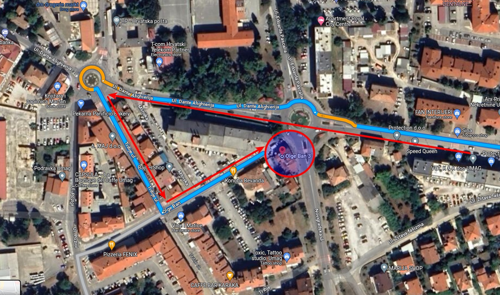
📍 The map is interactive — you can zoom and move it. Open in Google Maps
Parking
Ispred apartmana se nalazi javni besplatni parking.
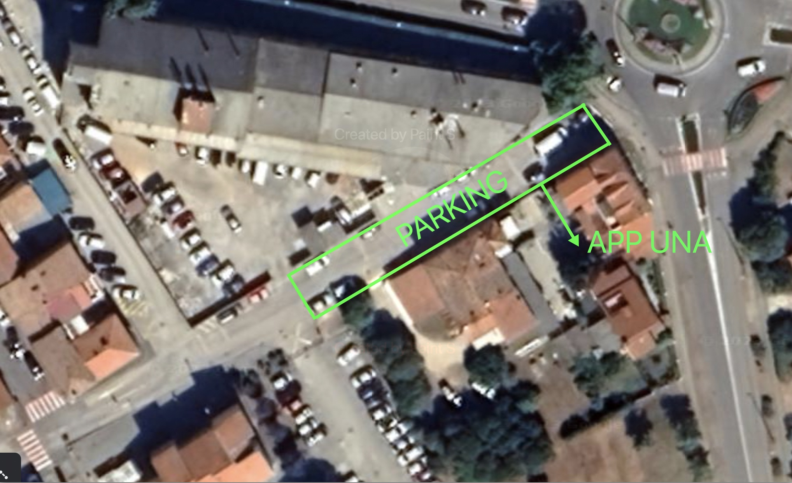
U slučaju da je zauzet navedeni parking ispred apartmana, preporučamo ove alternativne besplatne parkinge:
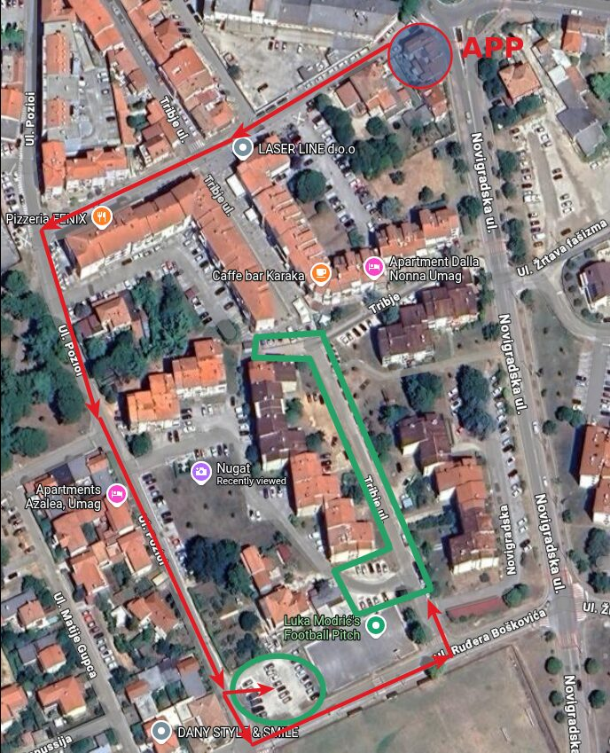
Ulaz u dvorište
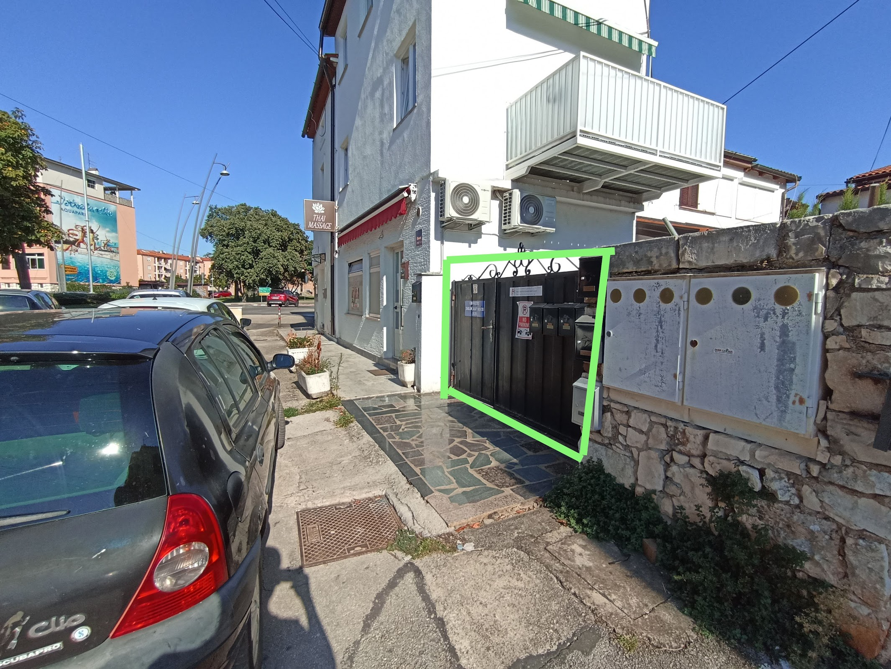
Ključevi
Ključeve možete preuzeti u poštanskom sandučiću (prezime Keglević). Jedan ključ je za ulazna vrata u dvorište, a drugi je za ulaz u apartman. Molimo vas da uvijek zaključavate dvorišna vrata.
Na zadnji dan boravka, pri odlasku iz apartmana, molimo vas ostavite ključeve u poštanskom sandučiću.
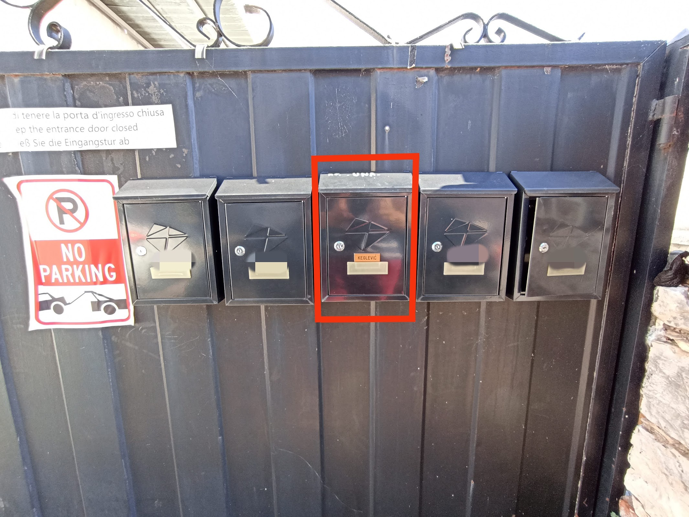
Unutar sandučića pronaći ćete mali sef. Šifru za otvaranje sefa poslati ćemo vam u poruci na booking.com. Šifru trebate odabrati na sefu, nakon čega ga možete otvoriti i preuzeti ključeve od apartmana. Sef nakon toga zatvorite, postavite neku nasumičnu šifru i zatvorite vrata sandučića.
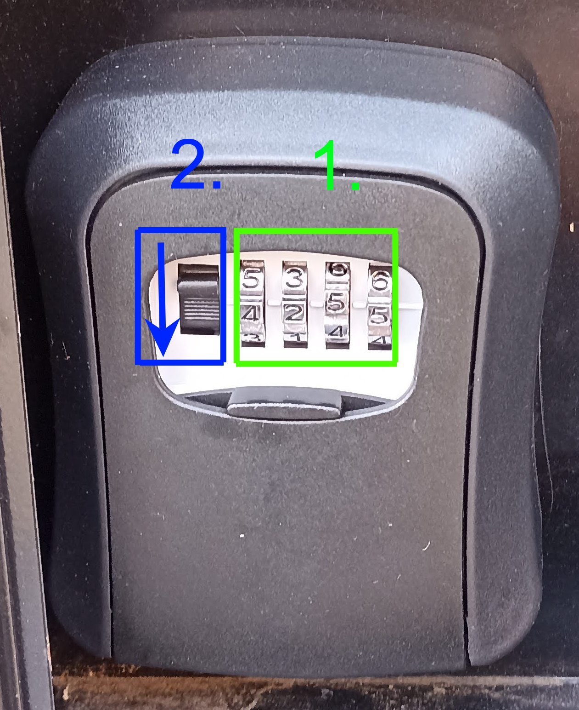
Ulaz u apartman
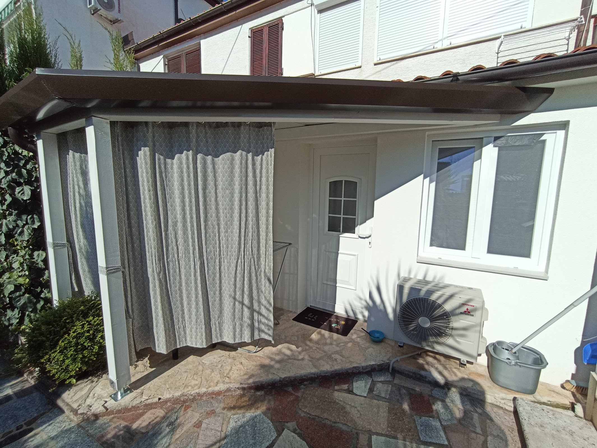
Ulazna vrata
Molimo vas obratite pozornost pri zaključavanju vrata, prvo je potrebno kvaku zakrenuti prema gore pa onda okrenuti ključ u bravi.
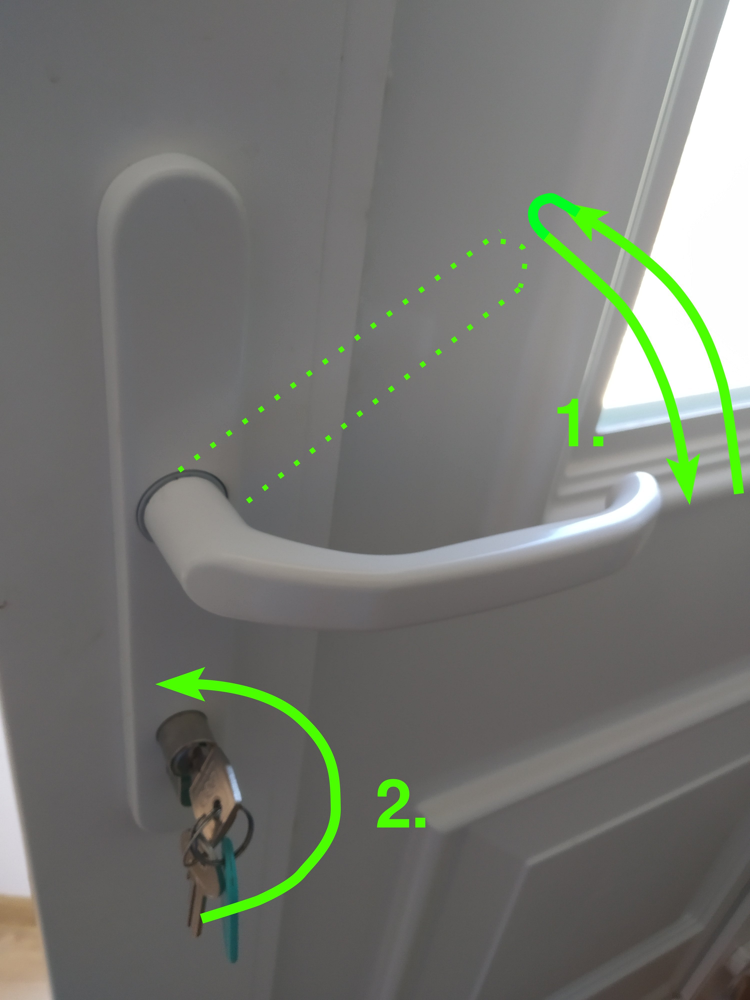
Daljinski za klimu
- Upali/ugasi klimu
- Povećaj/snizi temperaturu
- Odaberi hlađenje(pahulja) / grijanje(sunce)
- Odabrano hlađenje
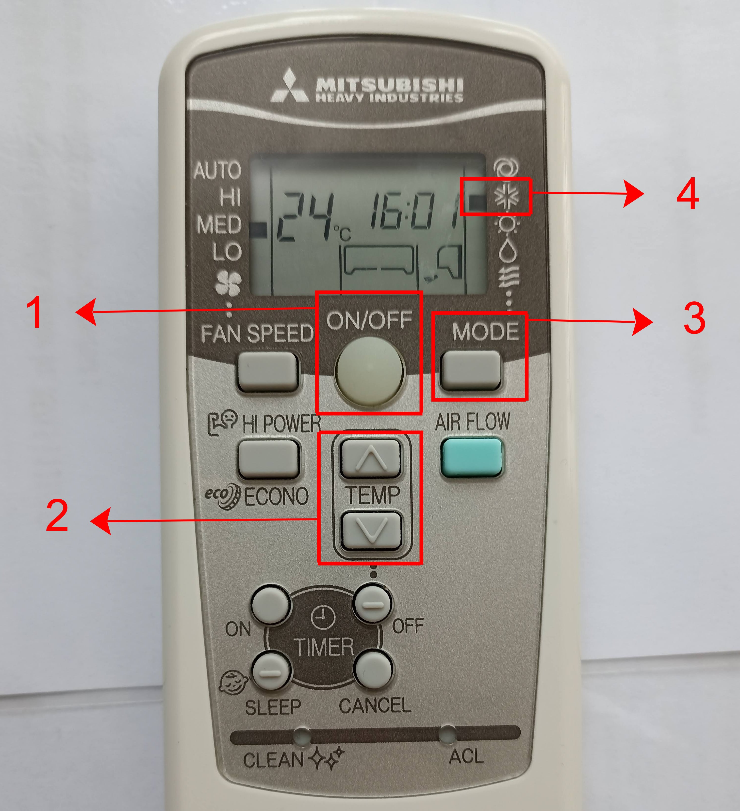
Za grijanje, potrebno je pritisnuti tipku "mode" kako bi se kvadratić pojavio uz sunce.
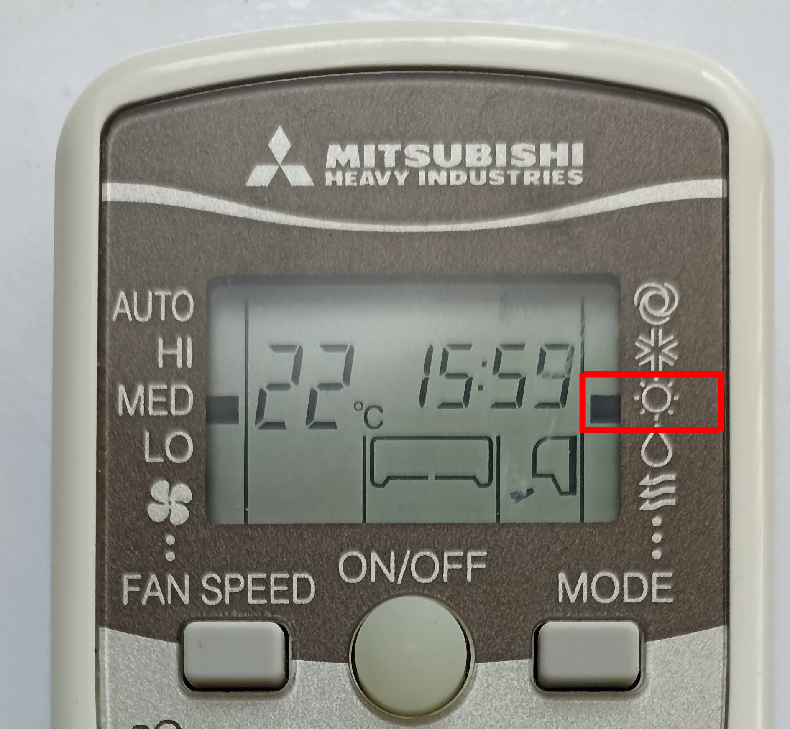
Daljinski za TV
- Upali/ugasi TV
- Upali/ugasi TV prijemnik
- Promjena TV kanala
- Pojačaj/smanji glasnoću
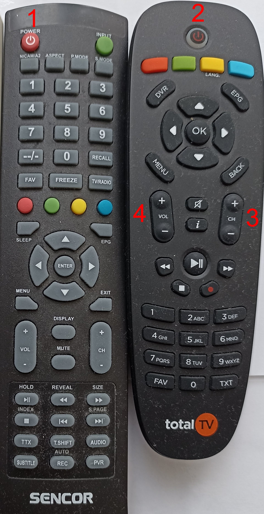
Topla voda
Kako biste imali tople vode za tuširanje, bojler za vodu treba biti upaljen.
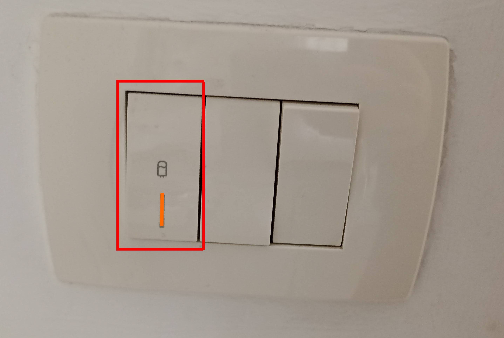
Smeće
Molimo vas da smeće bacate u kontejner "Apartman Una" kod ulaza u dvorište. Ukoliko napunite kontejner možete nam javiti na Facebook ili Viber kako bi ga ispraznili.
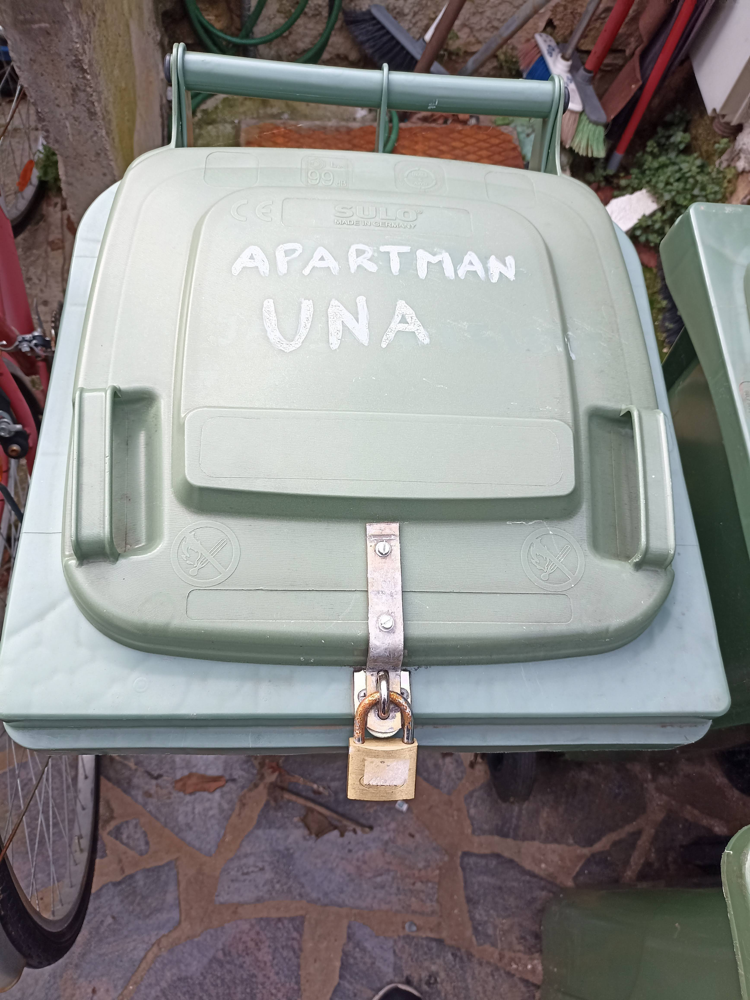